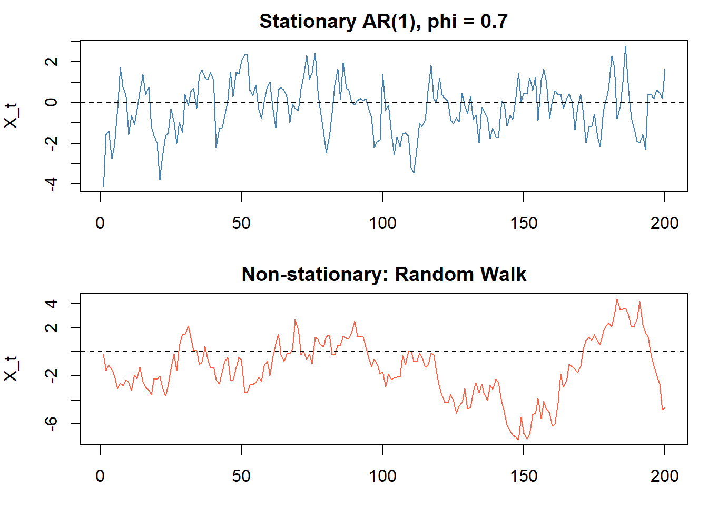
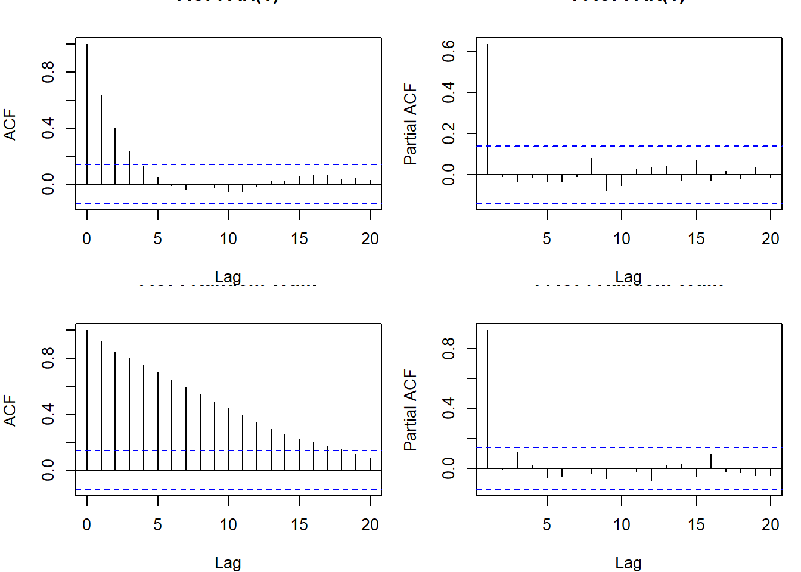
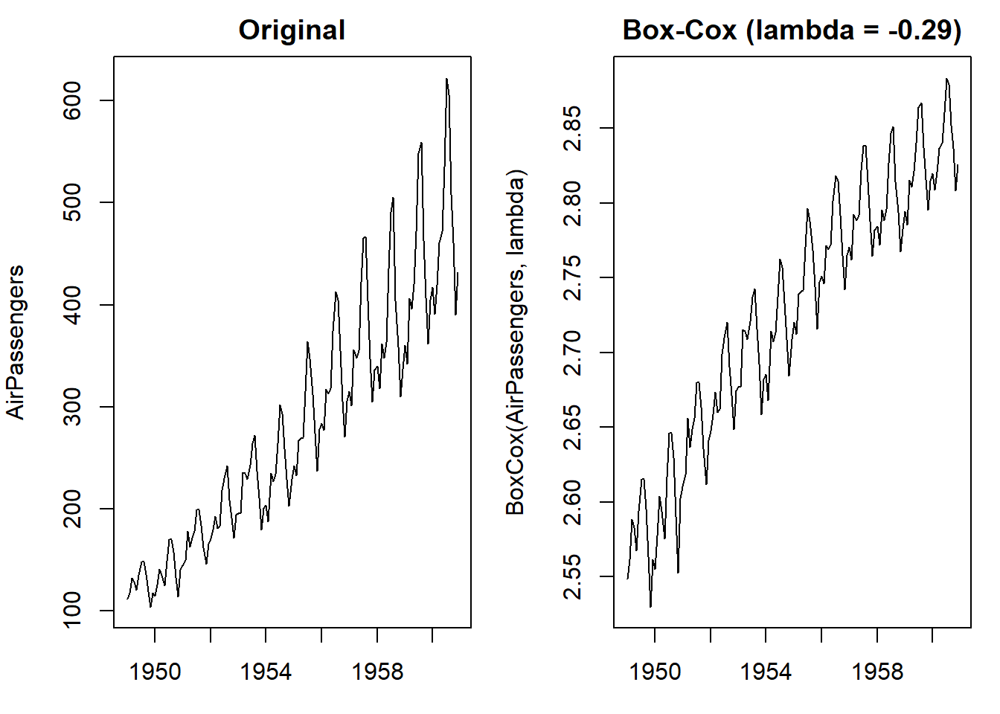

A time series is a sequence of observations \(\{X_t\}\) indexed by time \(t = 1, 2, \ldots, T\). Unlike cross-sectional data, observations are ordered and generally not independent. Past values carry information about future ones.
More formally: a stochastic process is a collection of random variables \(\{X_t, t \in \mathbb{Z}\}\) all defined on the same probability space \((\Omega, \mathcal{F}, P)\). A time series is a single realization (sample path) of this process. We observe one draw from the joint distribution of \((X_1, X_2, \ldots, X_T)\).
This is important: we have \(T\) observations but they come from a single realization. To do inference we need structure (stationarity + ergodicity) that lets us learn about the distribution from this one path.
Use the multiplicative form when the amplitude of seasonal swings grows proportionally with the level of the series (common in economic data like retail sales). The log of a multiplicative model is additive: \(\log X_t = \log T_t + \log S_t + \log C_t + \log I_t\).
Deterministic vs. stochastic models: a deterministic model treats \(T_t\) and \(S_t\) as fixed functions of time (e.g., a linear trend \(T_t = \beta_0 + \beta_1 t\)). A stochastic model treats the trend itself as a random process (e.g., a random walk). The distinction matters for forecasting and differencing.
Moments
The basic moment functions of a stochastic process:
Note \(\gamma(t,t) = Var(X_t)\), so \(\rho(t,t) = 1\) always.
Stationarity
Strict Stationarity
A process is strictly stationary if its joint distribution is invariant to time shifts. Formally, for all \(k \geq 1\), all \((t_1, \ldots, t_k)\), and all \(h\):
The entire distributional structure (not just moments) is the same regardless of when you look at the process. This is a very strong condition.
Implications: if strictly stationary with \(E(X_t^2) < \infty\), then: - \(E(X_t) = \mu\) (constant) - \(Var(X_t) = \sigma^2\) (constant) - \(Cov(X_t, X_{t+k}) = \gamma(k)\) depends only on lag \(k\), not on \(t\)
So strict stationarity with finite second moments implies weak stationarity.
Weak (Covariance) Stationarity
A process is weakly stationary if:
\(E(X_t) = \mu\) for all \(t\) (constant mean)
\(Var(X_t) = \sigma^2 < \infty\) for all \(t\) (finite, constant variance)
\(Cov(X_t, X_{t+k}) = \gamma(k)\) for all \(t\) (autocovariance depends only on the lag \(k\))
This is what we usually mean when we say “stationary.” The joint distribution can still shift over time; we only require the first two moments to be stable.
Note: weak stationarity does NOT imply strict stationarity in general. The exception is Gaussian processes: if \(X_t\) is Gaussian and weakly stationary, then it is also strictly stationary, because the Gaussian distribution is fully characterized by its first two moments.
Under weak stationarity, the autocovariance and autocorrelation simplify to functions of the lag only:
Note \(\rho(0) = 1\) always, and by Cauchy-Schwarz, \(|\rho(k)| \leq 1\) for all \(k\).
Properties of the Autocovariance Function
For a weakly stationary process, \(\gamma(k)\) has the following properties:
\(\gamma(0) = Var(X_t) \geq 0\)
Symmetry: \(\gamma(k) = \gamma(-k)\) (so we only need \(k \geq 0\))
Cauchy-Schwarz bound: \(|\gamma(k)| \leq \gamma(0)\) for all \(k\)
Positive semidefinite: for any \(n\) and any scalars \(a_1, \ldots, a_n\): \[\sum_{i=1}^n \sum_{j=1}^n a_i a_j \gamma(i-j) \geq 0\]
Property 2 follows from \(Cov(X_t, X_{t+k}) = Cov(X_{t+k}, X_t) = Cov(X_{t'}, X_{t'-k}) = \gamma(-k)\) by stationarity (with \(t' = t+k\)). Property 3 follows directly from Cauchy-Schwarz applied to \(Cov(X_t, X_{t+k})\).
set.seed(42)n <-200# stationary: AR(1) with phi = 0.7x_stationary <-arima.sim(model =list(ar =0.7), n = n)# non-stationary: random walkx_rw <-cumsum(rnorm(n))par(mfrow =c(2, 1), mar =c(3, 4, 2, 1))plot(x_stationary, type ="l", main ="Stationary AR(1), phi = 0.7",ylab ="X_t", col ="steelblue")abline(h =0, lty =2)plot(x_rw, type ="l", main ="Non-stationary: Random Walk",ylab ="X_t", col ="tomato")abline(h =0, lty =2)

The stationary series fluctuates around a fixed mean and the deviations are bounded. The random walk drifts arbitrarily with no mean reversion.
Ergodicity
Stationarity alone is not enough to do statistics. We have one realization of length \(T\) but need to estimate population moments. Ergodicity is the condition that ensures time averages converge to ensemble (population) averages as \(T \to \infty\):
Intuitively: the process “explores” its distribution over time, so a long enough sample gives us the same information as many independent draws. A random walk is stationary in some senses but not ergodic: a single realization drifts and does not come back to explore the full distribution.
A sufficient condition for ergodicity of the mean is:
This is larger than \(\sigma^2/T\) whenever \(\gamma(k) > 0\) (positive autocorrelation inflates the variance of the sample mean). For an iid sample the sum collapses to \(\gamma(0)/T\).
Note the divisor is \(T\) (not \(T-k\)). Using \(T-k\) gives an unbiased estimator, but the \(T\)-denominator version has lower MSE and guarantees the estimated autocovariance matrix is positive semidefinite. This is the standard choice.
Under the null that \(\{X_t\}\) is iid (white noise), \(\hat{\rho}(k) \overset{approx}{\sim} N(0, 1/T)\) for each \(k\), giving 95% confidence bands of \(\pm 1.96/\sqrt{T}\).
ACF and PACF
Autocorrelation Function (ACF)
The sample ACF plots \(\hat{\rho}(k)\) against lag \(k\). It answers: how correlated is \(X_t\) with \(X_{t-k}\), ignoring everything in between?
par(mfrow =c(2, 2), mar =c(4, 4, 2, 1))acf(x_stationary, main ="ACF: AR(1)", lag.max =20)pacf(x_stationary, main ="PACF: AR(1)", lag.max =20)acf(x_rw, main ="ACF: Random Walk", lag.max =20)pacf(x_rw, main ="PACF: Random Walk", lag.max =20)

The AR(1) ACF decays geometrically; the PACF cuts off after lag 1. The random walk ACF decays very slowly, which is a sign of non-stationarity.
Partial Autocorrelation Function (PACF)
The PACF at lag \(k\), denoted \(\phi_{kk}\), is the correlation between \(X_t\) and \(X_{t-k}\) after removing the linear influence of the intermediate lags \(X_{t-1}, \ldots, X_{t-k+1}\). It isolates the direct effect at each lag.
Formal definition: \(\phi_{kk}\) is the last coefficient in the best linear predictor of \(X_t\) given \((X_{t-1}, \ldots, X_{t-k})\). This is computed via the Yule-Walker equations at order \(k\):
where \(\Gamma_k = [\gamma(i-j)]_{i,j=1}^k\) is the \(k \times k\) autocovariance matrix, \(\boldsymbol{\phi}_k = (\phi_{k1}, \ldots, \phi_{kk})'\), and \(\boldsymbol{\gamma}_k = (\gamma(1), \ldots, \gamma(k))'\). The PACF at lag \(k\) is \(\phi_{kk}\).
Under \(H_0\) (white noise), this statistic has a chi-squared distribution with \(m\) degrees of freedom. A large value (small p-value) indicates significant autocorrelation.
Box.test(x_stationary, lag =10, type ="Ljung-Box")
When a series is non-stationary, the goal is to transform it into a stationary one before modeling. There are two kinds of non-stationarity to address:
Non-constant variance: stabilize with a log or Box-Cox transform
Non-constant mean (stochastic trend): remove with differencing
Log Transformation
Stabilizes variance when variability grows with the level (e.g., financial prices, economic aggregates). For a series \(X_t > 0\):
\[W_t = \log(X_t)\]
If \(X_t\) has multiplicative errors, \(\log X_t\) has additive errors. The log transform also compresses right skewness.
Box-Cox Transformation
Generalizes the log. The parameter \(\lambda\) is chosen to stabilize variance across the range of the series:
\(\lambda = 1\) is no transformation; \(\lambda = 0.5\) is square root; \(\lambda = 0\) is log. In practice, estimate \(\lambda\) by maximizing the profile log-likelihood.
Differencing and the Backshift Operator
The backshift operator\(B\) shifts a series back by one period: \[B X_t = X_{t-1}, \qquad B^k X_t = X_{t-k}\]
The first difference operator: \(\nabla = (1 - B)\), so \(\nabla X_t = X_t - X_{t-1}\).
par(mfrow =c(1, 2), mar =c(3, 4, 2, 1))plot(AirPassengers, main ="Original")plot(BoxCox(AirPassengers, lambda), main =paste0("Box-Cox (lambda = ", round(lambda, 2), ")"))

Decomposition
A time series can be decomposed into components. The additive decomposition assumes:
\[X_t = T_t + S_t + I_t\]
The multiplicative decomposition assumes:
\[X_t = T_t \cdot S_t \cdot I_t\]
where \(T_t\) is the trend, \(S_t\) is the seasonal component, and \(I_t\) is the irregular (noise) component. Classical decomposition estimates \(T_t\) by a moving average, then estimates \(S_t\) from the detrended series, and \(I_t\) is what is left over.
Note: the decomposed irregular component is what we model with ARMA. The goal of the identification-transformation step is to produce a stationary, homoscedastic series for ARMA modeling.